SAFARI
Users
Buying and Storing:
Fresh truffles have far more aroma and flavor than frozen or preserved truffles, but are extremely perishable. They should be used the day purchased if at all possible. Beyond three days they are hopelessly degraded. Most truffles purchased in North America are purchased on-line, and shipped Tuesday through Thursday by overnight express.Some truffles are packed in white rice, which can extend their usability a few days, but which tends to dehydrate them with loss of aroma. It is suggested to use the rice for risotto or the like because it will have absorbed some of the flavor.
Oregon truffles are often shipped not yet ripe (as explained below), but can be greatly improved by letting them ripen. They are ready when they become just slightly softer. When moisture starts to appear on the outside, and then they must be used now.
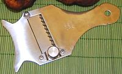
Prep & Cooking
White Piedmont truffles are almost never cooked at all, but shaved paper thin (use a truffle plane) and served atop salads, pasta dishes and the like, applied at the last moment before serving.
Black Périgord truffles are more durable and are commonly used in cooked dishes, applied in the last minutes of cooking, shaved or grated. They are quite compatible with fatty foods and are often shaved thin and slipped under the skin of game birds and the like. They are particularly compatible with omelets and scrambled eggs. They are also used just shaved or grated over pasta dishes, particularly those with creamy sauces, and other such dishes, always just before serving.
In times past chefs peeled truffles, but truffles were cheap then and their customers very wealthy. Today, they are rarely peeled, just scrubbed, then shaved. If your recipe demands they be peeled, scrub first, then use the peels for some other dish. Photo by Mary Smiley distributed under license Attribution-ShareAlike v3.0 unported.
Varieties
Truffle Oil / Truffle Vodka
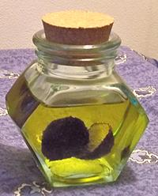
Be Aware: Most commercial "truffle oil" has never had intimate relations with an actual truffle. These olive and grapeseed oils are mixed with the chemical thioether (2,4-dithiapentane), just one of the many flavor and aroma elements in actual truffles. This concoction is roundly despised by reputable chefs, but is much used to flavor popcorn served with champaign (a current fad), French fries, and sometimes mashed potatoes or pasta.
In contrast, real truffle oil has complex flavors and aromas and
is considered a "chef's dream". It is, however, a little costly for
pouring over popcorn. Truffle Vodka is now being made, using real
truffles. It is usually drunk straight or in cocktails, but some
chefs have started using it as a cooking ingredient.
Photo by Véronique PAGNIER (cropped) distributed
under license Creative Commons
Attribution-ShareAlike v3.0 unported.
European Black Truffles
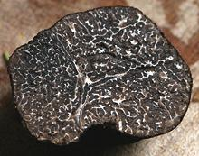
[Tuber melanosporum (Périgord) and Tuber aestivum (Burgundy / Summer), both of family Tuberaceae]
These are the truffles of France, usually found associated with oak, hazelnut and cherry trees. They are less pungent and more refined in flavor than Piedmont white truffles, and are usually 4 inches or less in diameter, but have been found weighing nearly 3 pounds. They are harvested from November to March. Black truffles are now cultivated in Australia, New Zealand and North America in plantings of hazelnut trees (for two harvests). They sell for around to 2013 US $130 per ounce, not nearly as high as white truffles. Photo by moi-même contributed to the Public Domain .
The Burgundy truffle is less intensely aromatic than the
Périgord, and there is a probably ecological variant of the
Burgundy Truffle called the "Summer Truffle" which was formerly
considered a separate species. It's flesh is lighter in color and it
is less intensely aromatic. Burgundy Truffles can be had for 2014
US $30 to 40 per ounce, Summer Truffles for about 2014 US $20 per
ounce.
White Piedmont Truffles
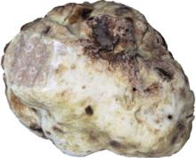
[Tuber magnatum of family Tuberaceae]
These truffles are found mainly in the Piedmont region of northwest Italy, but some are also found in Tuscany, southeast France and western Croatia and Slovenia. They have far outpaced the black truffle in price, some selling for as much as 2009 US $737 per ounce, but some can occasionally be had for under $300 per ounce. They are usually smaller than black truffles, but have been found weighing as much as 3.3 pounds. Harvest begins in October.
These truffles are hunted using mongrel dogs (purebreds can't
smell them). Pigs are even better at finding truffles, but,
unfortunately, pigs eat truffles, while dogs just want a doggy
treat. The photo specimen has a patch shaved off at the left so
the internal texture and color are exposed.
Photo by MatthiasKabel distributed under license
Creative Commons
Attribution-ShareAlike v3.0 unported.
Bianchetto truffle
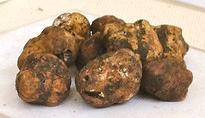 [Tuscan Truffle, Spring Truffle, Tuber borchii of family Tuberaceae]
These "whitish" truffles are found most commonly in Tuscany in
northwest Italy, but some are also found in Marche and Piedmont.
They range from 1/2 inch to 1-1/2 inches diameter and are said to
have a more garlicky flavor than the white truffle. Harvest is
between January and April. They are available in season for about
2014 US $30 per ounce.
Photo by UmbriaLovers distributed under license
Creative Commons
Attribution-ShareAlike v2.0 generic.
Oregon White Truffle
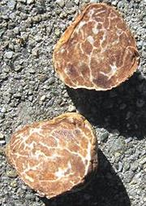
[Tuber gibbosum var. gibbosum, var. autumnale and var. oregonense]
Oregon white truffles are rather new to the market, but are rapidly gaining popularity. Of course, the French call them "false truffles", but most chefs seem quite happy with them - especially at around 2019 US $21 per ounce, a fraction of the price for White Piedmont truffles. Unfortunately, due to their low price, Oregon truffles are harvested by raking rather than hunting with dogs. This results in damage to the truffles and host trees, as well as degrading quality (thus the price), with many unripe truffles harvested. These can be ripened successfully if not too immature.
These truffles grow in association with fast growing Douglas Fir
trees, and most are harvested from tree farms. They can be found from
northern California to British Columbia, Canada, along the Cascade
mountain range. Some success has been reported cultivating these
truffles on Christmas tree farms. They normally range from 1/2 inch
to 2 inches diameter, rarely to 3 inches and ripen from October
through March. Currently, only var. autumnale is harvested
in commercial quantity.
Photo by Alan Rockefeller distributed under license
Creative Commons
Attribution-ShareAlike v3.0 unported.
Oregon Black Truffle
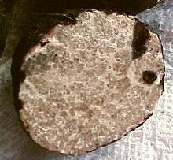
[Chartreuse Truffle (France); Leucangium carthusianum]
These have reached the market more recently than the Oregon white truffle and are much less common, but are gaining popularity. Most chefs seem quite happy with them - especially at around 2019 US $24 per ounce, a fraction of the cost of French black truffles. Unfortunately, due to their low price, Oregon truffles are harvested by raking rather than hunted with dogs. This results in damage to the truffles and host trees, as well as degrading quality (thus the price), with many unripe truffles harvested. These can be ripened successfully if not too immature.
In Oregon, these truffles grow in association with fast growing
Douglas Fir trees, and most are harvested from tree farms, but in
France they are associated with other trees. They can be found from
northern California to British Columbia, Canada, along the Cascade
mountain range. These ripen from January to June and can grow to
around 3 inches in diameter. They grow deeper than the white
Oregon truffles.
Photo by Daniel B. Wheeler (cropped and color balanced)
distributed under license Creative Commons
Attribution-ShareAlike v3.0 unported.
Oregon Brown Truffle
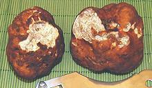
[Kalapuya brunnea of family Morchellaceae (Morels)]
This truffle, found in northern California and western Oregon,
has only been scientifically described in 2010. It is closely related
to the Morel mushroom, but certainly doesn't resemble it at all.
This truffle is not yet a commercial item, but is very edible and has
been harvested in Oregon, though not to the extent of the white or
black. The aroma of mature truffles resembles garlicky cheese, similar
to mature Camembert. They are usually between 1/2 inch and 2-3/8
inches in diameter. Like the others, they live associated with Douglas
Fir trees.
Photo by Mary Smiley distributed under license
Attribution-ShareAlike v3.0 unported.
California Truffle
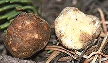 [Choiromyces alveolatum]
This is the most common example of a number of little known
truffles that can be found from Northern California north into
Washington State. Most are associated with Douglas Fir forests and
can grow to 2 inches in diameter. Their culinary characteristics are
currently little known, and how productive they are is also unknown.
Photo by U.S. Forestry Service = Public Domain.
Pecan Truffle
 [Tuber lyonii]
[Tuber lyonii]This fairly large truffle, growing to 4-3/4 inches across, is found associated with pecan trees. These trees and truffles grow mainly in the southeast of the United States, but are also found in the Great Lakes states of Minnesota, Michigan and Ohio. Formerly, pecan growers raked them up with fallen pecans and discarded them as a nuisance, but now they sell for 2018 US $16 to $18 per ounce. Pecan growers are now starting to use Truffle Dogs to sniff them out, improving quality and availability. Work is ongoing inoculating trees to provide a more consistent crop.
The orchards are quite productive, and the truffles are harvested
between September and February - later in the south than in the north.
The interior is tan to brown with white marbling and has a pleasant
nutty aroma. They are best freshly shaved onto warm, rich, buttery
dishes such as eggs, pasta, polenta or potatoes.
Photo adapted from
Great Lakes
Permaculture, permission requested.
Desert Truffles
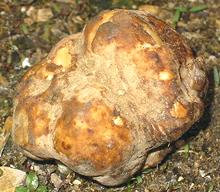 [Kalahari Truffle, Hungarian Honey Truffle; family Terfeziaceae, genera Terfezia, Tirmania and Mattirolomyces]
These truffles are found in the Kalahari desert of southern Africa, and in arid and semi-arid regions of the Mediterranean basin from Spain across North Africa and as far north as Turkey, Croatia and Hungary. Some are found in China. These truffles do not have the same intense aroma of European and Oregon truffles, but can be more widely used because of a much lower price. They can grow up to 10 ounces and are usually associated with Helianthemum shrubs. The photo specimen was from Turkey.
The African nation of Namibia has a sizeable crop of these truffles from the sandy grasslands of the Kalahari Desert. They are spotted by looking for small cracks in the sand, and are sold cheaply in the local markets. The crop is not, however, reliable enough to build an export market, though that is being worked on. Photo by katpatuka distributed under license Art Libra v1.3 .
The Hungarian or Honey Truffle (Mattirolomyces terfezioides)
was very popular in Central Europe during the days of the
Austro-Hungarian Empire, but fell out of favor during the period of
the World Wars, and was banned by the Communists for "bourgeois
decadence". It is found associated with black locust trees, and is a
very light beige color inside. The initial taste is said to be "lightly
mushroomy", but followed by a lingering honey sweetness. They can
be had for about 2014 US $25 per ounce.
Chinese Truffle
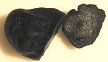 [Tuber indicum]
This truffles is less aromatic and has a far lower commercial
value than the Black Truffle (about 2014 US $17 per ounce), but has
often been used in fraudulent sales. It's skin is smoother than the
black and tends to be browner. A genetic test has been developed to
quickly identify this species. A bunch of new species have been
found (2011, 2012) in Yunan and Sichuan provinces of China, but
are not yet commercially exploited. Hopefully, the Chinese have not
yet figured out how to enhance these with lead, China's favorite
ingredient.
Photo by MatthiasKabel distributed under license
Creative Commons
Attribution-ShareAlike v3.0 unported.